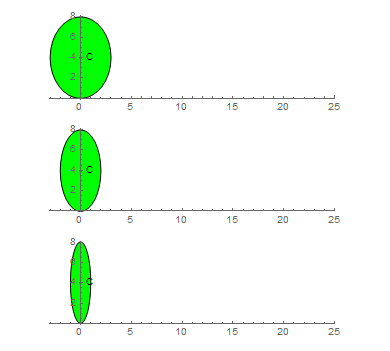

Rolling Ellipse
Problem 525
An ellipse E(a, b) is given at its initial position by equation:
The ellipse rolls without slipping along the x axis for one complete turn. Interestingly, the length of the curve generated by a focus is independent from the size of the minor axis:

This is not true for the curve generated by the ellipse center. Let C(a,b) be the length of the curve generated by the center of the ellipse as it rolls without slipping for one turn.

You are given C(2, 4) ~ 21.38816906.
Find C(1, 4) + C(3, 4). Give your answer rounded to 8 digits behind the decimal point in the form ab.cdefghij.